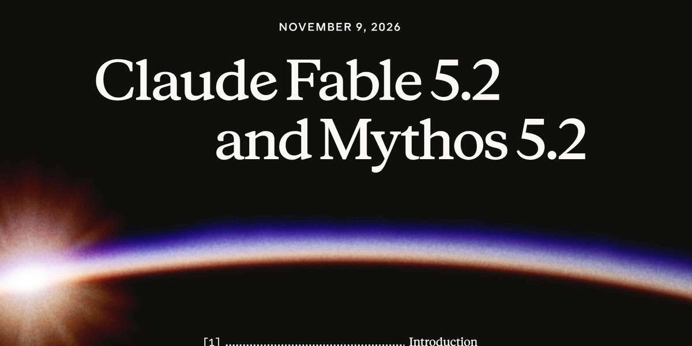

Claude Fable 5.2:
מה הוא עושה ומי מקבל אותו
ביום שני 9.11.2026 Anthropic השיקה את Claude Fable 5.2, המודל שלה לעבודות הטכניות הכי קשות. הנה מה שכתוב בהכרזה, בלי ניחושים.

צילום מסך שלנו של דף ההכרזה, 9.11.2026.
מה הוא עשה, לפי Anthropic
- 3 מכשירים מפסקה אחת: ביקשו ממנו לתכנן מכשירים אלקטרוניים שעובדים, עם מעגל, קופסה מודפסת ותוכנה. יצאו רכזת לעוזר קולי בבית, רמקול ודיבורית לחיבור USB, וחיית מחמד וירטואלית לכף היד. כל מעגל היה מוכן לייצור תוך פחות מיום.
- מערכת הפעלה מתיקייה ריקה: יותר מ-1,000 עוזרים שלו עבדו 8 ימים מסביב לשעון, ויצאה מערכת שעולה על לפטופ, עם חלונות, מסך כניסה ומתקין.
- משפט פרמה ב-30 שעות: 1,000 עותקים שלו תרגמו את ההוכחה לשפה שמחשב בודק צעד אחרי צעד. לגרסת מחקר קודמת זה לקח 11 ימים.
- פיזיקה: הוא פתר 2 בעיות פתוחות שקשורות לחורים שחורים.
מי מקבל אותו
לפי Anthropic הוא זמין מ-9.11 בכל הפלטפורמות, ועונה עד 30% מהר יותר מ-Fable 5.1. במנוי Pro, לשבוע אחד מההשקה, כל מודלי Fable כלולים במנוי, עד חצי מהמכסה השבועית, ועוד איפוס אחד של המכסה. המבצע לא חל על התוכנית החינמית, ואף דף לא אומר שיש בה Fable.
מתי Fable ומתי Opus
לפי Anthropic, לרוב העבודה היומיומית עם קוד ומידע עדיף להתחיל ב-Opus 5.5, ולעלות ל-Fable כשהפרויקט גדול ומסובך. משימות של אבטחת סייבר Fable חוסם ברובן. באפליקציות של Claude ברירת המחדל היא מאמץ בינוני (Medium).
איך מנסים השבוע
- יש לכם Pro? בוחרים את Fable 5.2 בשיחה חדשה.
- מתארים בפסקה אחת את הפרויקט הגדול שדחיתם: מה רוצים שיהיה בסוף, ולמי.
- נותנים לו לעבוד, ובודקים את מה שחזר.
כן, אבל
את הדוגמאות למעלה הריצה Anthropic, לא אנחנו. עוד לא הרצנו את Fable 5.2 בעצמנו, אז אין כאן תוצאה שלנו.
מקורות
- Anthropic, ההכרזה על Claude Fable 5.2: anthropic.com
- Anthropic, עזרה: מבצע ההשקה של Fable 5.2: support.claude.com
עוד מדריכים
ציור על דף? Gemini בונה אותו בתלת-ממדמצלמים ציור, ו-Gemini בונה ממנו דגם תלת-ממד שמרכיב את עצמו ומסתובב באצבע. התוצאה האמיתית, הבקשה להעתקה ו-3 צעדים.אפקטים לרילס? Claude בונה בצ'אטClaude בונה אפקטים לרילס מבקשה אחת: מספר שעולה, כותרת עם מרקר ורשימה עם וי. התוצאה האמיתית, הבקשה להעתקה ו-3 צעדים.תיקייה ב-Claude: מסבירים רק פעם אחתתיקייה ב-Claude (Projects): מעלים מסמכים פעם אחת, וכל שיחה בתיקייה מכירה אותם. הצעדים והוראות קבועות להעתקה.